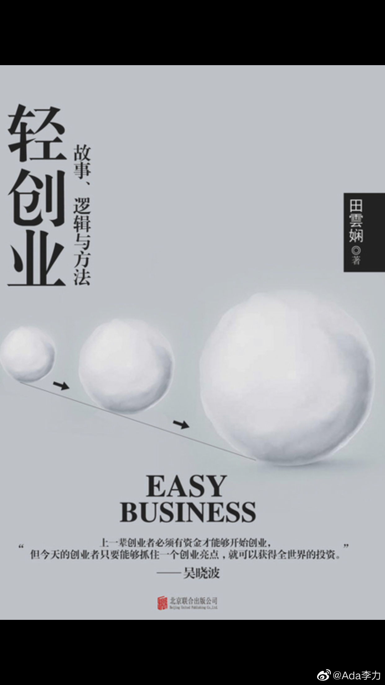

#创业#
《轻创业：故事，逻辑与方法》2017年4月出版，里面收集了50个创业故事，我是无意中发现这本书的，越看越有意思。因为时隔两年，这些公司是否还存在，活得如何，一目了然。
我看这本书的时候，在玩个游戏，阅读的时候就揣测这个创业项目的结果，看完后搜相关信息，来验证下我的判断是否正确。哈哈~，正确率还挺高的。
有些项目一听介绍，就相当不靠谱，当然，不靠谱的项目也有做得成的，那得创业者本人很牛逼，但实际上这些项目不靠谱的创业者，自己就是小白，比如大学刚毕业。这种情况，要么可以说：无知者无畏；要么可以说是，自作孽不可活。
记者写创业故事也有意思，在总结某个2B项目的经验时这么说。"创业优势：用最好的产品和服务打造最好的口碑"，这句话属于典型的正确废话。我查了下这家公司，现在还不错，但发展里面有几个关键环节：比如才几个人的工作室，是怎么拿到蒙牛的订单，后来还获得2020年奥运会设计任务，怎么跟制造业大集团搞的合作，这就属于黑匣子了。
今天大半天就花在这本书上了，边看边做笔记吐槽，还是挺欢乐的。吐槽+欢乐，是因为这50个创业项目，做败的占绝大部分，让我觉得自己创业失败也不算啥了。
这50个里面当然也有明星，比如罗辑思维, 大疆无人机，PAPI酱等。我发现这些成功的创业项目里面，做自媒体和网红比例还是蛮高的。不知道是不是取样偏差带来的现象，不然就挺值得琢磨啦。
《轻创业：故事，逻辑与方法》2017年4月出版，里面收集了50个创业故事，我是无意中发现这本书的，越看越有意思。因为时隔两年，这些公司是否还存在，活得如何，一目了然。
我看这本书的时候，在玩个游戏，阅读的时候就揣测这个创业项目的结果，看完后搜相关信息，来验证下我的判断是否正确。哈哈~，正确率还挺高的。
有些项目一听介绍，就相当不靠谱，当然，不靠谱的项目也有做得成的，那得创业者本人很牛逼，但实际上这些项目不靠谱的创业者，自己就是小白，比如大学刚毕业。这种情况，要么可以说：无知者无畏；要么可以说是，自作孽不可活。
记者写创业故事也有意思，在总结某个2B项目的经验时这么说。"创业优势：用最好的产品和服务打造最好的口碑"，这句话属于典型的正确废话。我查了下这家公司，现在还不错，但发展里面有几个关键环节：比如才几个人的工作室，是怎么拿到蒙牛的订单，后来还获得2020年奥运会设计任务，怎么跟制造业大集团搞的合作，这就属于黑匣子了。
今天大半天就花在这本书上了，边看边做笔记吐槽，还是挺欢乐的。吐槽+欢乐，是因为这50个创业项目，做败的占绝大部分，让我觉得自己创业失败也不算啥了。
这50个里面当然也有明星，比如罗辑思维, 大疆无人机，PAPI酱等。我发现这些成功的创业项目里面，做自媒体和网红比例还是蛮高的。不知道是不是取样偏差带来的现象，不然就挺值得琢磨啦。
- 